菜单¶
编辑¶
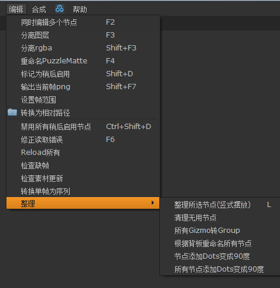同时编辑多个节点¶
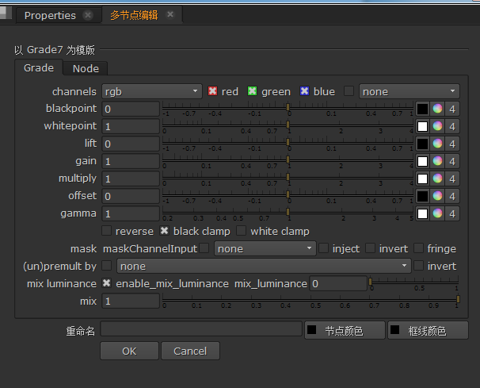同时设置多个同类型节点 常用于设置Read节点帧范围
如果选中的节点包含多个类型会要求用户选择¶
分离图层¶
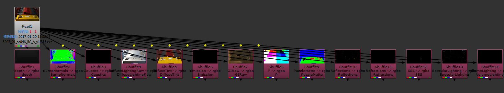为选中节点的每个图层(Layer)创建一个Shuffle
分离rgba¶
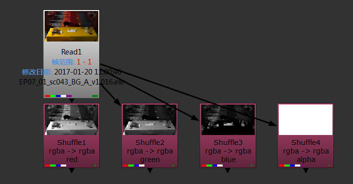为选中节点的rgba通道各创建一个shuffle
重命名PuzzleMatte¶
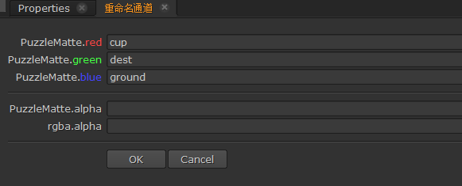为选中节点中的PuzzleMatte通道指定新的名称 提升节点可读性
效果¶
标记为稍后启用¶
将选中节点标为稍后启用, 用于加快预览
在首选项中有相关设置使其在保存时自动重新开启
可以使用 禁用所有稍后启用节点 来快速禁用所有
输出当前帧png¶
为选中节点当前帧创建一张png
设置帧范围¶
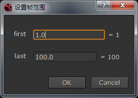为选中读取节点设置帧范围
小技巧
适用情况较限定, 推荐使用同时编辑多个节点代替
转换为相对路径¶
将选中读取节点的素材路径转为相对路径
注意
这是从老版本插件继承的功能,尚未测试
禁用所有稍后启用节点¶
将所有标记为稍后启用的节点禁用
修正读取错误¶
在有读取节点错误时先拖入正确的素材¶
会比较文件名将报错的素材替换为同名正确的素材¶
Reload所有¶
一次性点击所有读取节点的Reload
检查缺帧¶
检查所有读取节点的素材缺帧状况
在Nuke打开和保存文件时会自动执行此命令
无素材缺帧的正常情况¶
如果有缺帧¶
节点上会显示¶
错误控制台上也会显示¶
检查素材更新¶
比较素材修改日期和当前脚本工程文件日期
在Nuke打开文件时会自动执行此命令

无素材更新的正常情况¶
如果有素材更新¶
转换单帧为序列¶
将所有单帧的读取节点转换为序列
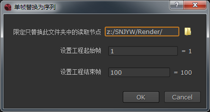工程中需要替换成序列的单帧节点¶
所有符合条件的节点都会被替换¶
匹配抽帧¶
根据为选中节点的 rgb 通道创建对应的 TimeWrap 节点用于匹配抽帧。
如果每一帧都不同，则提示用户未检测到抽帧而不创建节点。
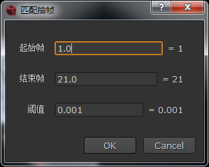对话框选项:
起始帧
匹配起始帧
结束帧
匹配结束帧
阈值
匹配阈值，0 到 1。 rgb 亮度变化平均值大于阈值算作帧有变化。
匹配结果¶
编辑/整理¶
用于整理节点
整理所选节点(竖式摆放)¶
比原生自动摆放方法效果更好的竖式自动摆放
整理前¶
整理后¶
清理无用节点¶
删除未被写入节点使用的节点
清理前¶
清理后¶
所有Gizmo转Group¶
交付给无插件环境前对脚本使用此命令以脱离插件依赖
根据背板重命名所有节点¶
通过背板对节点批量命名
命名前¶
命名后¶
节点添加Dots变成90度¶
执行前¶
执行后¶
注解
这是一个实验性功能
所有节点添加Dots变成90度¶
对所有节点执行 节点添加Dots变成90度
合成¶
Redshift 预合成¶
将选中的Redshift素材节点进行分层预合成
一键搭建所需框架¶
Arnold 预合成¶
将选中的 Arnold 素材节点进行分层预合成
一键搭建所需框架¶
自动预合成¶
根据分层检测使用的素材类型，并使用对应的预合成。
支持：
RedShift
Arnold
帮助¶
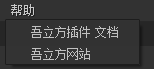吾立方插件 文档¶
本文档的入口
吾立方网站¶
公司官网
工具¶
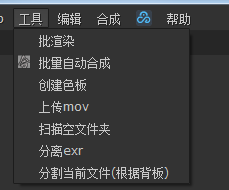每次使用前带需要设置的操作
上传mov¶
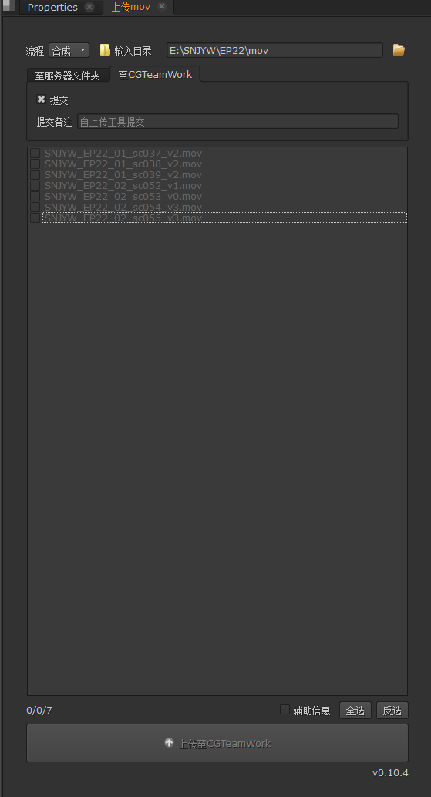上传工作成果至服务器或CGTeamWork
扫描空文件夹¶
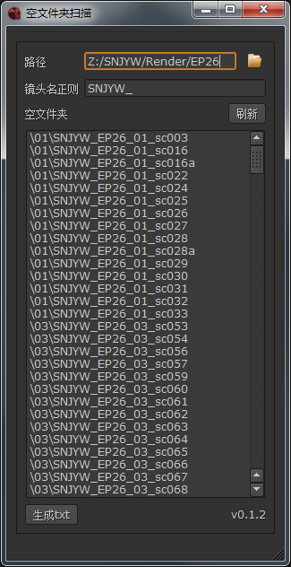用于快速找出无素材的镜头
分离exr¶
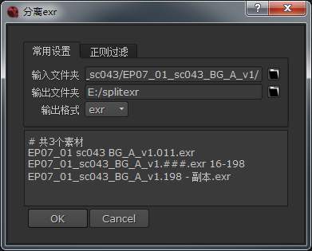把多层的exr文件分成多个单层的exr文件
分割当前文件(根据背板)¶
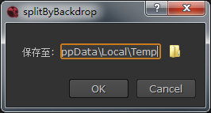把多包含多个镜头的文件根据背板(Backdrop)分离成多个单镜头的文件